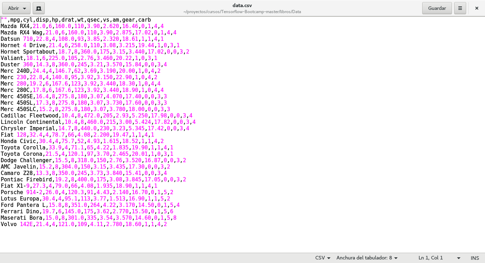
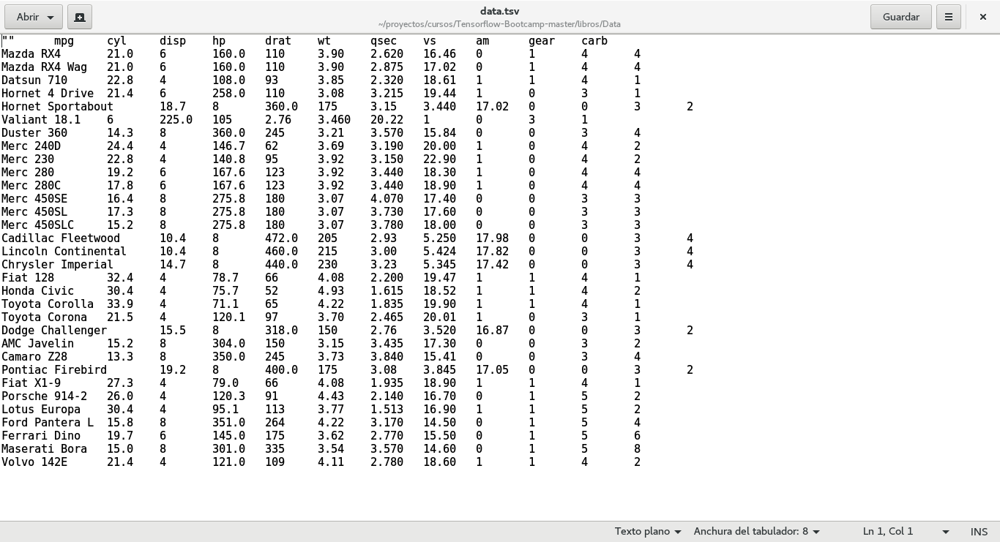

PDF Scraping para Pandas usando tabula-py
Posted on dom 15 abril 2018 in Tutorial Python • 2 min read
Hace un tiempo quería hacer pruebas de extracción de datos de PDF que publica la Administración Pública en Venezuela, ya que el concepto de Datos Abiertos no está muy claro por acá, lo más que se logra son documentos en PDF donde pegan gráficas y tablas como capturas de pantalla.
Por cierto, existe un evento del día de los datos abiertos. Ese día fue el 3 de Marzo en este año. si le dan click al mapa, aparece la lista de eventos de ese día por países.
Este artículo se basa en un artículo en inglés publicado en Medium sobre tabula-py.
Para el caso de Venezuela, no aparece en la lista de eventos de la fecha del 3 de Marzo.
{kind=link}
Alianza para el gobierno Abierto.
Iniciativas de sitios de Datos Abiertos.
Que tal que pueda hacer un scrapping y de una usar Pandas (Introducción a pandas) para Ciencia de Datos.
Existe una librería para Python llamada tabula-py, en el github de tabula-py se encuentra un archivo llamado data.pdf, ese será el archivo pdf que se va a extraer la información.
Para usar tabula-py se puede instalar vía pip:
pip install tabula-py
A continuación se muestra en jupyter como usar tabula-py:
In [1]:
#Se importa read_pdf de tabula
from tabula import read_pdf
In [2]:
#Se lee el archivo data.pdf y se muestra el encabezado del dataframe
df = read_pdf('./Data/data.pdf')
df.head()
Out[2]:
| ID | Unnamed: 0 | mpg | cyl | disp | hp | drat | wt | qsec | vs | am | gear | carb |
|---|---|---|---|---|---|---|---|---|---|---|---|---|
| 0 | Mazda RX4 | 21.0 | 6 | 160.0 | 110 | 3.90 | 2.620 | 16.46 | 0 | 1 | 4 | 4 |
| 1 | Mazda RX4 Wag | 21.0 | 6 | 160.0 | 110 | 3.90 | 2.875 | 17.02 | 0 | 1 | 4 | 4 |
| 2 | Datsun 710 | 22.8 | 4 | 108.0 | 93 | 3.85 | 2.320 | 18.61 | 1 | 1 | 4 | 1 |
| 3 | Hornet 4 Drive | 21.4 | 6 | 258.0 | 110 | 3.08 | 3.215 | 19.44 | 1 | 0 | 3 | 1 |
| 4 | Hornet Sportabout | 18.7 | 8 | 360.0 | 175 | 3.15 | 3.440 | 17.02 | 0 | 0 | 3 | 2 |
In [3]:
#También se puede mostrar los datos en formato json
js = read_pdf('./Data/data.pdf',output_format='json')
In [4]:
#También se puede guardar un archivo en JSON, CSV,TSV
from tabula import convert_into
convert_into('./Data/data.pdf',"./Data/data.json",output_format='json')
#!cat ./Data/data.json
In [5]:
convert_into('./Data/data.pdf',"./Data/data.tsv",output_format='tsv')
#!cat ./Data/data.tsv
In [6]:
convert_into('./Data/data.pdf',"./Data/data.csv",output_format='csv')
#!cat ./Data/data.csv
A continuación se muestra la figura del editor que muestra data.csv:

Ahora se muestra el contenido del archivo data.tsv:

Al tener los datos en un dataframe se puede realizar toda la analítica de datos que se puede hacer con Pandas.
¡Haz tu donativo! Si te gustó el artículo puedes realizar un donativo con Bitcoin (BTC) usando la billetera digital de tu preferencia a la siguiente dirección: 17MtNybhdkA9GV3UNS6BTwPcuhjXoPrSzV
O Escaneando el código QR desde la billetera: